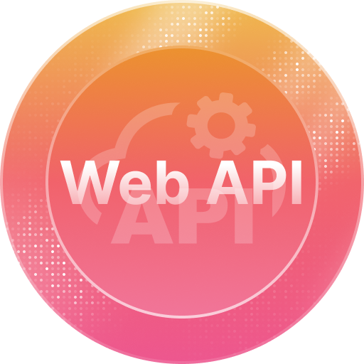

Summary
C# & .NET Software Developer with 6+ years of continuous learning and hands-on experience across full-stack development (backend APIs, frontend UIs, databases). Experienced integrating complex enterprise systems (Epicor ERP) while actively expanding skills across modern technologies and best practices.
Passionate about building complete, production-ready applications and continuously improving my craft as a developer. Currently focused on expanding portfolio through hands-on projects to strengthen practical development experience.
Driven by solving real problems and continuously improving as a developer.
Technical Skills
Core Skills
- Languages & Frameworks: C#, .NET (ASP.NET Core), SQL
- Enterprise Systems: Epicor Kinetic ERP, Epicor Functions, Kinetic Application Studio (Angular low-code UI), Epicor REST API integration
- Databases: Microsoft SQL Server, MySQL, SQLite
Additional Skills
- Languages: PowerShell, Python, JavaScript
- Tools & Platforms: Git, Azure DevOps, NuGet, Web API development, Database DevOps
- Data & Reporting: Excel (advanced formulas, PivotTables), Power BI, dashboards, data analysis
- Documentation: Material Design, technical writing, API documentation
- Process Improvement: Lean, Six Sigma Green Belt, Value Stream Mapping
Professional Experience
Business Solutions Developer | Turbocam International | Barrington, NH | Mar 2022 – Present
- Lead developer for custom Epicor UI layers and automated process flows using Epicor Functions, Kinetic Application Studio, and Epicor REST API
- Developed C# class libraries and NuGet packages to standardize ERP integrations and CRUD operations, deployed via Azure DevOps
- Collaborated with software team to automate data entry from internal databases into Epicor ERP via REST API, saving hours of manual work and improving accuracy of inventory cost tracking
- Built Power BI dashboards and Excel reports to support business intelligence and operational decision-making.
- Partnered with business units to design solutions that improve workflow efficiency and reduce bottlenecks.
Business Analyst | Turbocam International | Barrington, NH | Jan 2018 – Feb 2022
- Designed and implemented business process improvements using ERP tools and data analysis.
- Developed Excel dashboards and reporting solutions for KPI tracking.
- Supported Epicor ERP enhancements, including requirement gathering, testing, and user training.
Value Stream Manager | Turbocam International | Barrington, NH | Dec 2013 – Dec 2017
- Managed a $4.5M operational value stream and supervised a team of 9 employees.
- Applied Lean and Six Sigma methodologies to improve quality, reduce costs, and increase throughput.
- Created Excel-based reporting tools to monitor KPIs and inventory.
Education
Bachelor of Science in Occupational Health and Safety Studies | Keene, NH | 2001
Concentration: Safety Program Administration
Certifications
- Six Sigma Green Belt | NH Manufacturing Extension Partnership | 2015
- Advanced Value Stream Design | Institute for Operational Excellence | 2014
- Dale Carnegie | Effective Communications & Human Relations | 2008
- Expert Infantryman Badge | U.S. Army
Professional Development
IAMTIMCOREY.com
-
C# MasterCourse
Application development, debugging, database access, best practices Certificate (PDF) -
Web Development MasterCourse
Full-stack website design, deployment, optimization (HTML, CSS, JavaScript) Certificate (PDF) -
Web API From Start to Finish
Build resilient, powerful APIs including authentication, protection, versioning, documentation, monitoring, and much more. Certificate (PDF)

-
Blazor From Start to Finish
Deep understanding of Blazor framework to build interactive server-side and client-side web UIs using the power of C#. Certificate (PDF) -
Blazor Server From Start to Finish
Deep understanding of Blazor framework to build interactive server-side and client-side web UIs using the power of C#. Certificate (PDF) -
SQL Database From Start to Finish
Design, create, and manage SQL databases effectively. Certificate (PDF) -
Git From Start to Finish
Understand Git well to track your project history and collaborate successfully. Certificate (PDF)
Database DevOps From Start to Finish -
.NET Core AppSettings From Start to Finish
Know how to configure your app in a way that is powerful, efficient, and safe. Certificate (PDF) - Docker
{kind=link}
Use SQL Server Data Tools for database design, refactoring, source control, CI/CD, and more. Certificate (PDF)
Udemy
- 100 Days of Code: The Complete Python Pro Bootcamp (in progress, 80% complete)
- The Complete Full-Stack Web Development Bootcamp (in progress, 10% complete)